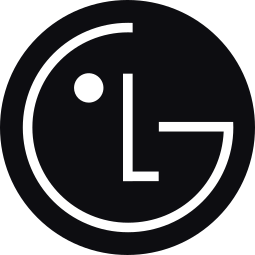

EDUCATION
Korea National University of Arts
BA, Transportation Design
Feb. 2020. – Aug. 2027. (estimated)
Ansan Technical Highschool
highschool diploma, Industrial Design
Feb. 2016. – Feb. 2019.
HONOR & AWARD
Volvo Design Competition 2026
Shortlisted (Phase 1)
Mar. 2026.
EXPERIENCE
HYUNDAI Exterior
industry-academic cooperation
〈AI-driven Design Process Development Research〉
- Built and implemented an AI-driven design framework to unify workflows across multiple projects.
- Led team operations by defining strategy and delegating tasks.
- Completed an individual project within the framework, contributing to the successful delivery of 8 projects for HYUNDAI.
Project Manager
Mar. 2025. – Dec. 2025.
KIA Next Design Interior
industry-academic cooperation
〈2030 eMPV Advanced Interior Design Research〉
- Led the project team in developing a future-oriented interior vision for a 2030 eMPV concept.
- Explored forward-looking meta trends research to define the cultural and technological context.
Project Manager
Mar. 2024. – Jun. 2024.
EXHIBITION

LG Electronics × K-Arts
〈Objects with Nunchi: When Home Appliances Develop Emotional Intelligence〉,
Gyeongdong Market, Seoul, 2025
Gyeongdong Market, Seoul, 2025
Contributed to the 3D visualization of Furon(LG's Affectionate Intelligence).
Dec. 2025. – Apr. 2026.